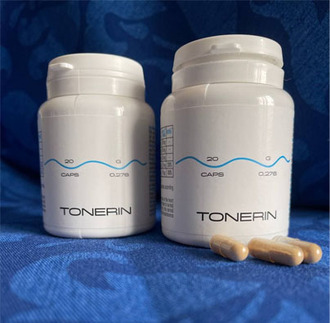

Πώς ένας Έλληνας ειδικός έσωσε τον Σωτήριο Γιαλαμά από το
χειρουργείο.
Πονοκέφαλος και αύξηση της αρτηριακής πίεσης. Δυσκολεύεστε να γυρίσετε το λαιμό σας ή να σκύψετε. Τα πόδια πρήζονται το βράδυ, το πρωί είναι πρησμένο το πρόσωπο. Εμβοές στα αυτιά. Τα δάχτυλα μουδιάζουν, τα χέρια και τα πόδια κρυώνουν, η όραση είναι θολή, η μνήμη επιδεινώνεται. Δεν έχεις καθόλου ενέργεια. Κάποιοι θα πουν ότι αυτά είναι σημάδια γήρανσης. Όμως δεν είναι ετσί.
- - Γιατί τα αγγεία ευθύνονται κατά 90% για την κατάσταση της υγείας σας;
- - Ποιές ουσίες μαζεύονται στα τοιχώματα των αιμοφόρων αγγείων, εκτός από τη χοληστερίνη;
- - 4 φανερά συμπτώματα ανθυγιεινών αιμοφόρων αγγείων και 7 κρυφά
- - Πώς να καθαρίσετε τις φλέβες μόνοι σας με ασφάλεια;

Σε αυτές ερωτήσεις απάντησε η Δρ. ιατρικής Ευγενία Μαλαξός, προϊσταμένη του καρδιολογικού τμήματος του νοσοκομείου.
Δόκτωρ ιατρικής Ευγενία Μαλαξός. Το 2007, ίδρυσε το πρώτο τμήμα ρομποτικού καθετηριασμού στην Ελλάδα στο νοσοκομείο της Χομόλκας, καθώς και ένα πειραματικό εργαστήριο της καρδιακής ηλεκτροφυσιολογίας. Συμμετέχει σε μερικά ερευνητικά προγράμματα στον τομέα της επεμβατικής καρδιολογίας και της επεμβατικής ηλεκτροφυσιολογίας, είναι μέλος πολλών οργανισμών όπως: η Ευρωπαϊκή Ένωση Καρδιολογικού Ρυθμού, Σύλλογος Καρδιακού Ρυθμού της Αμερικής, Ευρωπαϊκή Εταιρεία για τη Μελέτη των Καρδιακών Αρρυθμιών, είναι μέλος του Ευρωπαϊκού Καρδιολογικού Συλλόγου και Πρόεδρος της Ένωσης Καρδιολόγων του Καρδιολογικού Συλλόγου της Ελληνικής Δημοκρατίας, επίσης συμμετέχει στον ρομποτικό καθοδηγούμενο καθετηριασμό στο Σύλλογο Καρδιακού Ρυθμού της Αμερικής.
Γιατί τα αγγεία ευθύνονται
κατά 90% για την κατάσταση της υγείας σας;
Γιατρέ, έχετε πει πολλές
φορές ότι τα αιμοφόρα αγγεία ευθύνονται για το 90% της υγείας του οργανισμού. Για πιο
λόγο;
Ποιο είναι το μεγαλύτερο εσωτερικό όργανο στο ανθρώπινο σώμα; Λίγοι γνωρίζουν την απάντηση σε αυτήν την ερώτηση. Ακόμα και αυτοί που σπουδάζουν ιατρική κάνουν λάθη. Αναφέρουν τον εγκέφαλο, το συκώτι. Οι πιο έξυπνοι λένε ότι είναι το δέρμα. Αλλά στην πραγματικότητα, το μεγαλύτερο όργανο είναι το αγγειακό σύστημα.
Τα αγγεία ενός ατόμου μπορούν
να τυλίξουν τον πλανήτη 2,5 φορές
μόνο στις φλέβες ενός
ατόμου
Η απόφραξη των αιμοφόρων αγγείων στα πόδια οδηγεί σε κιρσούς και συνοδεύεται από πρήξιμο, βάρος στα πόδια, τα πόδια κρυώνουν ή, αντίθετα, υπάρχει καύσος στα πέλματα των ποδιών. Το δέρμα στις φτέρνες συχνά ραγίζει, η κυκλοφορία του αίματος διαταράσσεται, η προστασία από τα βακτήρια εξαφανίζεται, εμφανίζεται μυκητίαση, τα νύχια γίνονται λεπτά και σπάνε.
Η απόφραξη των αιμοφόρων αγγείων που τροφοδοτούν το ήπαρ προκαλεί την ηπατική στεάτωση. Όταν τρώτε λιπαρά φαγητά, υπάρχει μια πικρή γεύση στο στόμα σας.
Τα αγγεία που τροφοδοτούν τις αρθρώσεις εξασθενούν και φράζουν και αυτό προκαλεί την ξήρανση του χόνδρου. Οι αρθρώσεις πονάνε, εμφανίζονται οστεοχόνδρωση και κήλη.
Τα εντερικά αγγεία χάνουν την ελαστικότητά τους και εμφανίζονται αιμορροΐδες.
Αγγεία του ματιού: η όραση επιδεινώνεται και γίνεται θολή. Η ερυθρότητα των ματιών, που μπερδεύουμε με την κόπωση, στην πραγματικότητα είναι αποτέλεσμα των μικρών αιμορραγίων και της ρήξης των μικρών τριχοειδών αγγείων στα μάτια.
Εγκεφαλοαγγειακές διαταραχές: ζάλη, εμβοές και απώλεια μνήμης. Έχετε μπει ποτέ στην κουζίνα, ξεχνώντας τι θέλατε να κάνετε εκεί πέρα; Ή δεν μπορούσατε να θυμηθείτε μια λέξη που τη ξέρετε πολύ καλά. Αυτά είναι συμπτώματα επιδείνωσης της κατάστασης των αγγείων του εγκεφάλου.
Φυσικά, η υπέρταση επίσης
συμβάλλει σε αυτή τη λίστα. Η υπέρταση είναι η μητέρα του εγκεφαλικού και η αδερφή του
εμφράγματος.
Εκτός από τη χοληστερίνη,
ποιες είναι οι αιτίες της απόφραξης των αγγείων;
Όλοι γνωρίζουμε πόσο
επικίνδυνη είναι η χοληστερίνη. Φράζει τα αγγεία, τα λεπταίνει, επηρεάζοντας με αυτό το τρόπο τη ροή
του αίματος.
6,3 κιλά
είναι το
συνολικό βάρος των υπολειμμάτων που συσσωρεύονται στα αγγεία μέχρι τα 55.
ΧΟΛΗΣΤΕΡΟΛΗ
Είναι αλήθεια. Η χοληστερόλη ή οι «αθηροσκληρωτικές πλάκες» αποτελούν περίπου το 65-70% των αγγειακών υπολειμμάτων.
Κατά την ηλικία των 50 έως 5 κιλά χοληστερόλης μαζεύονται στον οργανισμό. Η συσσώρευση της χοληστερόλης μειώνει τη διάμετρο των αιμοφόρων αγγείων κατά τέσσερις έως πέντε φορές.
Αυτές οι πλάκες δεν βάζουν όμως τη ζωή σε κίνδυνο. Αν και η ποιότητα ζωής χειροτερεύει, η αρτηριακή πίεση ανεβαίνει, εμφανίζονται πονοκέφαλοι, πόνοι στην πλάτη, αδυναμία και απάθεια. Η θρομβωτική μάζα που συσσωρεύεται στα αγγεία είναι πολύ πιο επικίνδυνη.
4 φανερά σημάδια των
ανθυγιεινών αιμοφόρων αγγείων και 7 κρυφά
Ποια συμπτώματα δείχνουν ότι
τα αιμοφόρα αγγεία μας είναι βουλωμένα; Πώς να καταλάβουμε ότι το σώμα μας λέει: "Καθαρίστε
επειγόντως τα αγγεία!";
Εάν είστε άνω των 45 ετών και δεν έχετε πάρει ποτέ αγγειακά καθαριστικά, σας διαβεβαιώνω ότι τα αγγεία σας έχουν πρόβλημα.
45
αυτό είναι το όριο μετά το
οποίο πρέπει να καθαριστούν τα αγγεία
4 ασθένειες που προκαλεί η
απόφραξη των αιμοφόρων αγγείων:
- 1. Υπέρταση.
Ασταθής ή υψηλή αρτηριακή πίεση που πρέπει να ελέγχεται με φαρμακευτική αγωγή. Αυτό είναι το κύριο σύμπτωμα. Έχετε διαγνωστεί με υπέρταση; Τα αγγεία σας θέλουν καθαρισμό! - 2. Φλεβίτιδα
Άσχημες και πρησμένες φλέβες στα πόδια, αίσθημα βάρους και πόνου, οίδημα. Υπολείμματα χοληστερόλης και θρόμβοι αίματος φράζουν τις βαλβίδες των φλεβών. Σταδιακά εμφανίζονται αγγειακοί «αστερίσκοι» που τελικά εξελίσσονται σε κάτι πιο σοβαρό. Έτσι αναπτύσσονται οι κιρσοί. - 3. Αιμορροΐδες
Η απόφραξη των αγγείων του πρωκτού προκαλεί τη φλεγμονή των αιμορροΐδων. Η ρύπανση των αγγείων που τους τροφοδοτούν με αίμα συμβάλλει στην εμφάνιση των ρωγμών στο πρωκτό. - 4. Οστεοχόνδρωση
Διαταραχές της κυκλοφορίας αίματος στο χόνδρο. Ο χόνδρος σκληραίνει και φθείρεται πριν προλάβει να αποκατασταθεί. Δεν αναγεννιούνται και ξηραίνουν. Χάνει την αντικραδασμική του ικανότητα. Τα άλατα δεν φεύγουν και αποθηκεύονται ανεξέλεγκτα.
7 κρυφά συμπτώματα:
- 1. Οίδημα
Τα βουλωμένα αγγεία δεν μπορούν να αντλήσουν το αίμα. Παραβιάζεται ο μεταβολισμός νερού-αλατιού. Το βράδυ, τα πόδια είναι τόσο πρησμένα που οι κάλτσες αφήνουν βαθιά σημάδια στους αστραγάλους. Πρησμένο πρόσωπο, σακούλες κάτω από τα μάτια. Δεν μπορείτε να βγάλετε τα δαχτυλίδια από τα δάχτυλά σας. Το φούσκωμα της κοιλιάς σημαίνει οίδημα των εσωτερικών οργάνων. - 2. Εμβοές
Από απαλούς θορύβους μέχρι δυνατά σφυρίγματα που δε σας αφήνουν να συγκεντρωθείτε. Αυτό είναι αποτέλεσμα της αυξημένης πίεσης στα αγγεία του εγκεφάλου, η οποία επηρεάζει τα τύμπανα. - 3. Ζάλη
Το αίσθημα της «μέθης», οι ξαφνικές κρίσεις ζάλης υποδηλώνουν ότι η αιθουσαία συσκευή πινάει. Συχνά επηρεάζεται η ακοή. - 4. Αϋπνία
Νυστάζετε και νιώθετε κουρασμένοι αλλά δεν μπορείτε να κοιμηθείτε πριν από τα μεσάνυχτα; Αυτό συμβαίνει λόγω ανεπαρκούς παροχής αίματος στην υπόφυση. Σταματάει να παράγει μελατονίνη που είναι η ορμόνη του ύπνου. - 5. Μείωση της ενέργειας
Νιώθετε έλλειψη ενέργειας. Δεν έχετε διάθεση. Θέλετε απλά να ξαπλώσετε στο κρεβάτι και να τρώτε. Αυτό συμβαίνει όταν το σώμα αρχίζει να εξοικονομεί ενέργεια. Τα βουλωμένα αγγεία εμποδίζουν τη μεταφορά των θρεπτικών ουσιών που χρειάζονται τα όργανα και το σώμα μειώνει τη δραστηριότητά του. - 6. Διαταραχές της όρασης;
Φλας στα μάτια, κηλίδες, θολή όραση. Συμπτώματα διαταραχής όρασης. - 7. Πόνος στις αρθρώσεις
Πόνος στις αρθρώσεις όταν αλλάζει ο καιρός. Το πρωί, αντί να ξυπνάς ήρεμος και ξεκούραστος, νιώθεις σαν .ενας ημιπαράλυτος ανάπηρος, πονάνε όλα σου τα κόκαλα. Χρειάζεσαι χρόνο για να τεντώσεις το σώμα σου. Αυτό συμβαίνει επειδή το αρθρικό υγρό χάνει τις ιδιότητές του.
Έχετε τουλάχιστον ένα από αυτά τα συμπτώματα; Τα αγγεία σας λένε
ότι χρειάζονται καθαρισμό και θρεπτικά συστατικά.
Οι άνθρωποι συχνά έχουν αυτά
τα συμπτώματα σε διαφορετικούς συνδυασμούς ταυτόχρονα. Ή ακόμα και όλα μαζί
Τι χρειάζεται για τον καθαρισμό των αιμοφόρων αγγείων από τη
χοληστερόλη, τους θρόμβους αίματος και τα υπολείμματα;
Επιθυμούμε την επαγγελματική σας συμβουλή. Παράδειγμα: ο Σωτήριος Γιαλαμάς, 61 ετών, παντρεμένος, είναι υπέρβαρος, πάσχει από υπέρταση και κιρσούς. Αντιδρά στην αλλαγή του καιρού με την ακρίβεια του βαρόμετρου: υποφέρει από πόνους στις αρθρώσεις, κόπωση, υπνηλία και πονοκεφάλους.
Πώς μπορούμε να βοηθήσουμε το Σωτήριο; Πώς μπορεί να καθαρίσει τα
αιμοφόρα αγγεία του αν δεν θέλει να πάει σε έναν ειδικό και να ακούσει ότι "πρέπει να χάσει
βάρος", "πρέπει να αθλείται", "χρειάζεται υγιεινή διατροφή", "είναι
ήδη στην ηλικία που αυτό είναι φυσιολογικό» κ.λ.π.;
Τα περισσότερα φάρμακα και φαρμακευτικά προϊόντα δεν βοηθούν, απλώς αδειάζουν το πορτοφόλι σας και προκαλούν εθισμό.
Δυστυχώς, έτσι λειτουργεί το υγειονομικό σύστημα στην Ελλάδα. Κατανοώ πλήρως την απροθυμία του ασθενούς να απευθυνθεί με αυτό το πρόβλημα σε έναν ειδικό. Όμως ο Σωτήριος μπορεί να βοηθήσει τον εαυτό του.
Μπορώ να προτείνω μόνο ένα ασφαλές καθαριστικό των αγγείων: το . Το παρατείνει τη ζωή κατά 11-17 χρόνια, δίνει ενέργεια και αίσθηση ανακούφισης, τα προβλήματα θα φύγουν, η δύναμη και η ενέργεια αυξάνονται.
Το είναι ένα μείγμα φυτικών εκχυλισμάτων που ενεργοποιούν τα ζωντανά μόρια. Αυτά τα εκχυλίσματα κανούν έναν καλό καθαρισμό: αφαιρούν τη χοληστερόλη από τα αιμοφόρα αγγεία, τους θρόμβους αίματος που κολλάνε στα τοιχώματα, τα υπολείμματα του ασβέστη και των φαρμάκων. Δηλαδή, όλα τα στοιχεία που εμποδίζουν την κυκλοφορία του αίματος.
Οι τοξικές ουσίες που συσσωρεύονται με τα χρόνια και δηλητηριάζουν τη ζωή σας θα φύγουν, χάρη στο σε μόλις 1,5-2 μήνες θεραπείας.
Σε μόλις 4 εβδομάδες, το διαλύει και αφαιρεί τις πλάκες χοληστερόλης
βάρους 400 γραμμαρίων. Μαλακώνει 900 γραμμάρια με 1 κιλό μάζας θρόμβου και αφαιρεί 350-400 γραμμάρια
χλωριούχου ασβεστίου.
Ταυτόχρονα, εξαφανίζονται οι πονοκέφαλοι και οι εμβοές. Ο εγκέφαλος αρχίζει να χορταίνει και λειτουργεί με την ταχύτητα του ενός υπερυπολογιστή. Οι σκέψεις γίνονται πιο καθαρές.
Οι αισθήσεις γίνονται πιο έντονες, αρχίζετε να ακούτε ευχάριστους ήχους που δεν τα ακούγατε πριν. Η ακοή βελτιώνεται, τώρα μπορείτε να ακούσετε τη συνομιλία που γίνεται σε άλλο δωμάτιο.
Το άρωμα αποκτά νέα χρώματα. Η ρινική συμφόρηση εξαφανίζεται, μαζί με τη χρόνια ρινίτιδα και τις αλλεργίες. Ο βήχας εξαφανίζεται επίσης λόγω της εξάπλωσης της τραχείας. Η αναπνοή είναι ομοιόμορφη και ελεύθερη. Ο καθαρός αέρας, γεμίζοντας τους πνεύμονες, απλώνεται στο σώμα ευχάριστα, προκαλώντας αίσθημα ήπιας ευφορίας.
Η Γεύση είναι πιο δυνατή και έντονη. Το συνηθισμένο φαγητό φέρνει την εξαιρετική ευχαρίστηση. Τρώτε λιγότερο και χορταίνετε πιο γρήγορα. Η λαχτάρα σας για γλυκά και λιπαρά τρόφιμα θα εξαφανιστεί.
Οι αρθρώσεις σας "χαίρονται" . Και σταματούν να πονάνε. Δεν τρίζουν πλέον, και χάρη στην αποκατάσταση του κολλαγόνου στις αρθρώσεις, οι κινήσεις γίνονται πιο ομαλές. Είναι σαν να αλλάζετε το λάδι στον κινητήρα του αυτοκινήτου: έχετε αντικαταστήσει το μαύρο υγρό που περιέχει κομμάτια μετάλλου με ένα φρέσκο και διαυγές λάδι που παρέχει τέλεια λίπανση.
Ελλείψεις και πρόγραμμα εκπτώσεων
-Το εξαφανίστηκε
σχεδόν από όλα τα φαρμακεία. Γιατί συμβαίνει αυτό;
Η σύγκρουση προκλήθηκε από την απληστία των αλυσίδων φαρμακείων, οι οποίες ζήτησαν από τον παραγωγό του 2400 για κάθε συσκευασία που πωλείται! Με αυτήν την τεράστια προσαύξηση στην τιμή του προϊόντος (ορισμένοι φαρμακοποιοί αύξησαν την τιμή σε 4700 ), ήθελαν να κάνουν και άλλη χρέωση.
Οι εκπρόσωποι των φαρμακείων υποστήριξαν ότι η κίνηση ήταν δικαιολογημένη επειδή τους βοήθησε να διατηρήσουν την επιχείρησή τους. Το το χρειάζονται οι ασθενείς μία φορά κάθε 7-10 χρόνια. Επιπλέον, μετά τον καθαρισμό των αγγείων με το , οι ασθενείς δεν χρειάζονται φάρμακα που πριν χρησιμοποιούσαν τακτικά! Οι άνθρωποι αρνούνται να αγοράσουν φάρμακα για την αρτηριακή πίεση και παυσίπονα για τον πόνο στις αρθρώσεις. Η κατανάλωση φαρμάκων για το άσθμα και τον διαβήτη μειώνεται σημαντικά. Αυτό οδηγεί σε τεράστιες απώλειες για τα φαρμακεία. Γι' αυτό αύξησαν την τιμή του .
Ως εκ τούτου, ο παραγωγός του τερμάτισε τη σύμβαση με όλα τα φαρμακεία και τώρα κάνει μόνο διαδικτυακές πωλήσεις. Και καλά κάνει. Δεν χρειάζεται να πληρώνει ενοίκιο ή να δωροδοκεί τα φαρμακεία για να πουλάνε τα προϊόντα του. Έτσι, το τώρα είναι πολύ πιο φθηνό από τότε που το πωλούνταν στα φαρμακεία.
Εκπτωτικό πρόγραμμα "Καθαρά αγγεία"
Το ινστιτούτο μας, σε συνεργασία με το Πανεπιστήμιο Ιατρικής και
Φαρμακολογίας στην Οστράβα, το ταχυδρομείο και τον παραγωγό του , ξεκίνησε ένα πρόγραμμα
εκπτώσεων στο πλαίσιο του προγράμματος τηλεϊατρικής (διαδικτυακά μέσα).
Μπορούν όλοι όσοι θα συμμετάσχουν στο πρόγραμμα να λάβουν το σε νέα ειδική τιμή των μόνο!!
Τι πρέπει να κάνουμε για να λάβουμε μέρος στο πρόγραμμα;
Για να παραγγείλετε το
στο πλαίσιο του προγράμματος εκπτώσεων, πρέπει να πληρούνται οι
ακόλουθες προϋποθέσεις:
- Παραγγέλνετε το για προσωπική χρήση.
Ο πελάτης και ο παραλήπτης πρέπει να είναι το ίδιο πρόσωπο. Αυτό είναι απαραίτητο για την προστασία από τους μεσάζοντες που προσπαθούν να αγοράσουν μεγάλες ποσότητες του και να τις πουλήσουν σε υψηλότερη τιμή. - Κάντε μια παραγγελία μέσω της επίσημης φόρμας του προγράμματος.
Η επίσημη φόρμα παραγγελίας εγγυάται την τιμή του παραγωγού και σας προστατεύει από τους μεσάζοντες
Κωνσταντίνα
είναι το ΚΑΛΥΤΕΡΟ ΠΡΟΪΟΝ. Στην αρχή έπαιρνα Αντελφάν και μετά Ερινίτ. Ξέρω ότι αυτά τα φάρμακα είναι του παρελθόν. Αλλά δεν μου αρέσει να πηγαίνω σε ειδικούς και πίστευα ότι το πρόβλημά μου δεν ήταν τόσο σοβαρό. Τα έπαιρνα κατά καιρούς όταν είχα υπέρταση και πόνο στο στήθος. Αλλά μετά από λίγο σταμάτησαν να με βοηθούν. Τελικά πήγα σε έναν ειδικό και μου πρότεινε το (ήταν ένας νεαρός ειδικός, ένας από εκείνους τους ανθρώπους που πιστεύουν ότι το φαρμακείο πρέπει να βοηθά τους ανθρώπους και όχι απλά να βγάζει χρήματα!) . Το με βοήθησε την πρώτη κιόλας ημέρα: η πίεση έπεσε αμέσως, αλλά συνέχισα να το παίρνω, όπως το συμβούλεψε ο ειδικός. Μετά από 3 εβδομάδες, ξέχασα εντελώς την υπέρταση. Οι κιρσοί μου που με βασάνιζαν για 11 χρόνια, θεραπεύτηκαν! Είχα κάποια γυναικολογικά προβλήματα τα οποία επίσης εξαφανίστηκαν. Νιώθω υπέροχα, σαν ένα νέο κορίτσι!!!

Βασιλική
Μέχρι πρόσφατα, η μητέρα μου ένιωθε συνεχώς μούδιασμα στα δάχτυλά της και ο φίλος της, που είναι ειδικός, τη συμβούλεψε να κάνει καθαρισμό των φλεβών. Της είπαν για "στατίνες", όμως εγώ βρήκα πληροφορίες ότι μπορεί να προκαλέσουν καρκίνο του παχέος εντέρου και δεν ήθελα να το διακινδυνεύσω. Έμαθα για το τυχαία. Πολύ σύντομα παρατήρησα τα πρώτα θετικά αποτελέσματα: σε λίγες μέρες το χρώμα άλλαξε, η κατάσταση των μαλλιών, των νυχιών και η γενική κατάσταση του σώματος βελτιώθηκαν σημαντικά, μετά από 15 ημέρες άρχισε να νιώθει τα δάχτυλά της. Μετά από ενάμιση μήνα, το μούδιασμα εξαφανίστηκε εντελώς και η αρτηριακή πίεση επέστρεψε στο φυσιολογικό. Νιώθει πολύ καλά, έχει αυξημένη ενέργεια, η μνήμη της έχει βελτιωθεί, οι αρθρώσεις της σταμάτησαν να πονάνε, ακόμα και σε κακές καιρικές συνθήκες. Το προϊόν είναι εξαιρετικό, το συνιστώ ανεπιφύλακτα.
Νίκη
Αγόρασα αμέσως το για να ομαλοποιήσω την πίεση, γιατί έχω πονοκέφαλο κάθε βράδυ, ακόμη και τα παυσίπονα δεν το βοηθούσαν. Αργότερα έμαθα ότι ο πόνος αυτός ήταν λόγω της υπέρτασης. Ένας πρώην συνάδελφος μου σύστησε το , κατάφερα να το αγοράσω με έκπτωση. Μετά από 2 μήνες έγινα διαφορετικός άνθρωπος! Τότε συνειδητοποίησα ότι δεν ζούσα πραγματικά πριν καθαρίσω τις φλέβες μου! Το κεφάλι μου δεν με πονάει πια, οι κιρσοί έχουν φύγει ΚΑΙ ΤΟ ΠΙΟ ΣΗΜΑΝΤΙΚΟ - έχασα 22 κιλά! Από 100 πήγα στα 78!!! Ο λόγος είναι η ομαλοποίηση της αρτηριακής πίεσης! Τώρα μπορώ να προτείνω το σε όλους!!!
Αλίκη
Ευχαριστώ! Κατάφερα να αγοράσω με έκπτωση, θα το δοκιμάσω
Χαρίκλεια
Τι να πω, πάντα με εκπλήσσουν οι άνθρωποι που ζουν εις βάρος των άλλων!!! Έχουν την εντύπωση ότι τους ανήκει όλος ο κόσμος! Όταν συνειδητοποίησα ότι χρειαζόμουν το , δεν το πίστευα πραγματικά! Δανείστηκα χρήματα και τα αγόρασα! Ξόδεψα 3600 κορώνες για αυτό! Και κάποιοι δεν θέλουν να το αγοράσουν για και περιμένουν κάποια προσφορά! Ντροπή!!
Αλεξία
Δεν πρέπει να κρίνεις τους άλλους. Δεν ξέρεις τι τους συμβαίνει! Ίσως είναι ανάπηροι, μπορεί να μην έχουν δουλειά, πού να βρουν λεφτά;
Ανθή
Ευχαριστώ για τα σχόλια σας Δεν μου αρέσει να πηγαίνω σε ειδικούς, συνήθως προτείνουν ακριβά φάρμακα ή αυτά που δεν είναι διαθέσιμα (θυμάμαι ότι έψαχνα για μερικές «ειδικές» οφθαλμικές σταγόνες, αλλά δεν υπήρχαν πουθενά στην πόλη, σκέτο σοκ). Τι να πω, οι ειδικοί δεν προσπαθούν να αντιμετωπίσουν το κύριο πρόβλημα. Τα δάχτυλά μου μουδιάζουν συχνά. Χάρη στα σχόλιά σας, αποφάσισα να δοκιμάσω το . Ακόμα κι αν το μούδιασμα προκαλείται από άλλο λόγο, δεν βλάπτει να καθαρίσετε τα αγγεία! Άλλωστε είναι φυσικό προϊόν, έχει πολλά θετικά. Ευχαριστώ!!